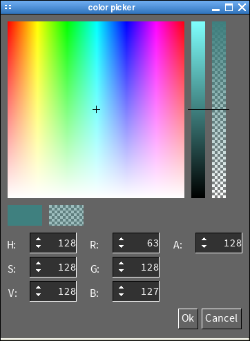

|
A simple message box that can display text, an icon and multiple buttons. An event when one of the buttons gets pressed (SGUI_MESSAGE_BOX_BUTTON*_EVENT). |
|  | A simple color picker that can be used to select a color in RGBA or HSVA color space. The events SGUI_COLOR_SELECTED_RGBA_EVENT and SGUI_COLOR_SELECTED_HSVA_EVENT are generated with the selected color as event argument when the user presses the accept button. |